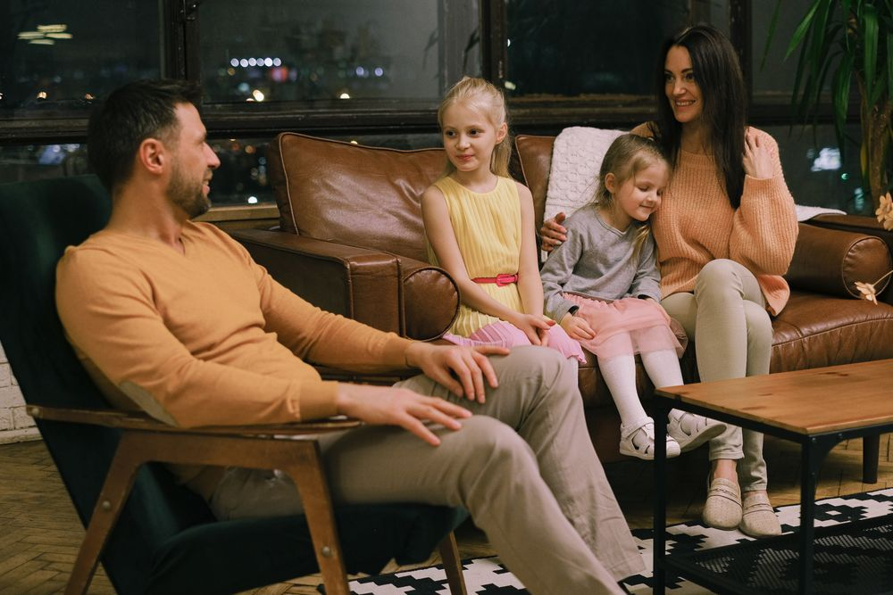
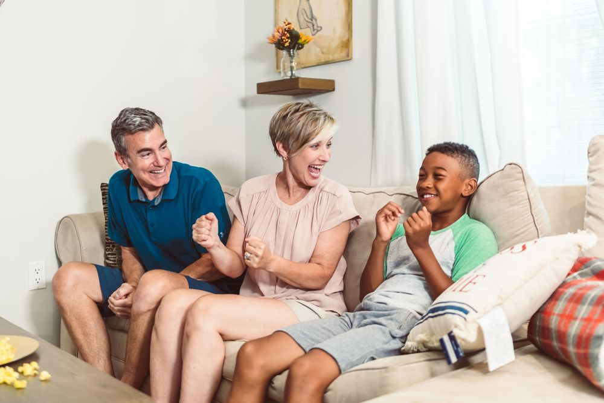
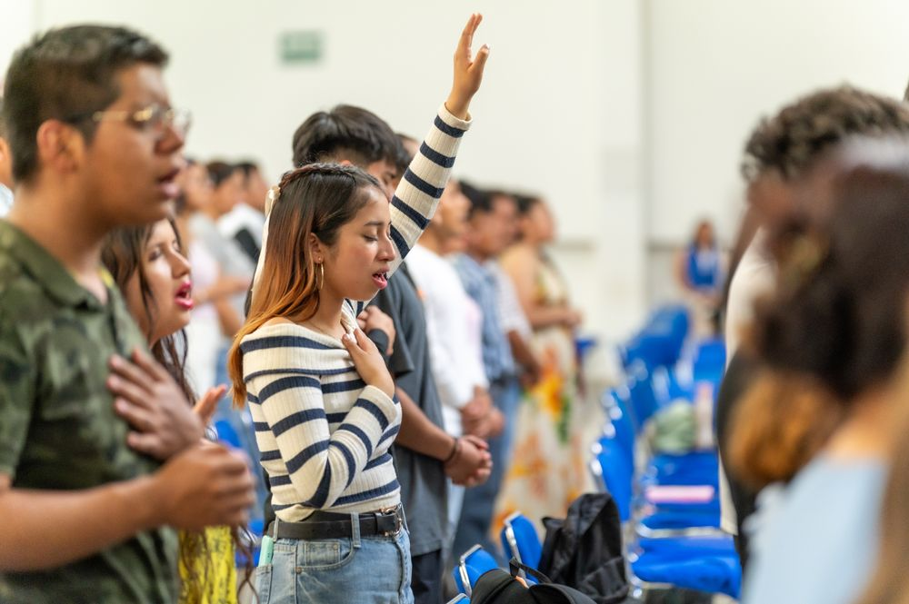

Sociología · Tema 6
La relación entre el individuo, los grupos y la sociedad
Nadie se forma solo.
Hay interdependencia: la identidad se construye al relacionarse con otras personas y al participar en grupos.
Así se aprenden normas, valores, costumbres, conocimientos y formas de comportamiento.

Inicio
Socialización primaria
Es el primer proceso. La persona aprende lo fundamental de la cultura y sus primeras formas de trato con los demás.
Cuándo
En la infancia
Con quién
Familia y cuidadores
Ejemplos
Hablar, convivir, hábitos y valores
Continúa
Socialización secundaria
Después se suman conocimientos, normas, valores y comportamientos nuevos, según los espacios en los que participa.
Cuándo
A lo largo de la vida
Dónde
Instituciones y otros espacios
Ejemplos
Escuela, trabajo y comunidades virtuales
Agentes de socialización
Cambian los grupos, cambia la persona. Cambian las personas, cambia la sociedad.
FamiliaValores, normas y hábitos.
Conocimiento y convivencia.
Gustos, identidad y actitudes.
Información y modelos culturales.
Opiniones y vida digital.

ReligiónCreencias y conducta.
Normas y responsabilidades.